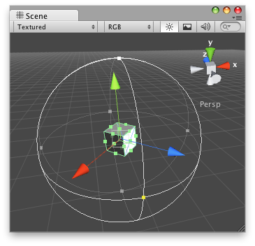

Handles.RadiusHandle
public static float RadiusHandle(Quaternion rotation,
Vector3 position,
float radius,
bool handlesOnly);
Parameters
| rotation | Orientation of the handle. | |
| position | Center of the handle in 3D space. | |
| radius | Radius to modify. | |
| handlesOnly | Whether to omit the circular outline of the radius and only draw the point handles. |
Returns
float
The new value modified by the user's interaction with the handle. If the user has not moved the handle, it will return the same value as you passed into the function.
Note: Use HandleUtility.GetHandleSize where you might want to have constant screen-sized handles.
Description 描述
Make a Scene view radius handle.

RadiusHandle on the Scene View.
// Name this script "EffectRadiusEditor" using UnityEngine; using UnityEditor;
[CustomEditor(typeof(EffectRadius))] public class EffectRadiusEditor : Editor { public void OnSceneGUI() { EffectRadius t = (target as EffectRadius);
EditorGUI.BeginChangeCheck(); float areaOfEffect = Handles.RadiusHandle(Quaternion.identity, t.transform.position, t.areaOfEffect); if (EditorGUI.EndChangeCheck()) { Undo.RecordObject(target, "Changed Area Of Effect"); t.areaOfEffect = areaOfEffect; } } }
And the Script attached to this GameObject:
// Name this script "EffectRadius" using UnityEngine; using System.Collections;
public class EffectRadius : MonoBehaviour { public float areaOfEffect = 1; }